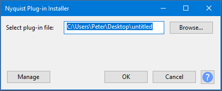

Nyquist Plug-in Installer
- Accessed by:
- 
- After it has been installed, it must be enabled in the Plug-in Manager.
To install a Nyquist plug-in:
- Click the 'File Browser' button and select the plug-in file.
- Click the 'OK' button to install, or 'Cancel'.
- Carefully review the output message.
- Use the Plug-in Manager to enable the installed plug-in.
Tips:
Windows / Linux: If you are unable to locate a plug-in that you have downloaded, this may be due to your web browser adding '.TXT' to the file name. In this case, you can change the file type filter in the file browser to show text files, or to show all files. The Nyquist Plug-in Installer is able to automatically correct the file name if '.TXT' has been erroneously added.
macOS: When downloading a Nyquist plug-in from the Internet, the web browser may add '.TXT' to the file name. Nyquist Plug-in Installer can correct this error automatically. If the filename extension is anything other than '.NY' or '.NY.TXT', then it is not a valid Nyquist plug-in and installation will fail.
.ZIP files: If the plug-in file name ends with '.ZIP', then it is an archive file. The plug-in file(s) inside the '.ZIP' files must be extracted first before they can be installed.
On successful installation: The Nyquist Plug-in Installer will display the name of the installed plug-in, and the full location of where it has been installed. Note that the installed plug-in will not be available in the Audacity menus until it has been enabled in the 'Plug-in Manager'.
Error messages:
- <file name> not found or cannot be read.
- The plug-in file selected does not exist, or is not readable. Check that you have selected the correct file.
- <file name> is not a supported plug-in.
- The selected file is not a Nyquist plug-in, or is malformed. (It may be a valid plug-in, but is not fully compliant with Nyquist plug-in standards.)
- <file name> is not a valid Nyquist plug-in.
- Nyquist plug-ins must have the filename extension '.NY'. This error occurs if the file does not have the correct file extension and the Nyquist Plug-in Installer is unable to correct it.
- <file name> cannot be written.
- The plug-in cannot be written to the default installation location. Ensure that you are logged in with a full user account (not a 'guest' account).
- <file name> is already installed.
- To avoid accidentally overwriting other plug-ins, if a plug-in with the same file name exists, the Nyquist Plug-in Installer will not overwrite it.
If you are sure that the conflicting plug-in is a totally different plug-in that happens to have the same file name, then you could try renaming the new plug-in. In this case you must ensure that the new name retains the '.NY' filename extension.